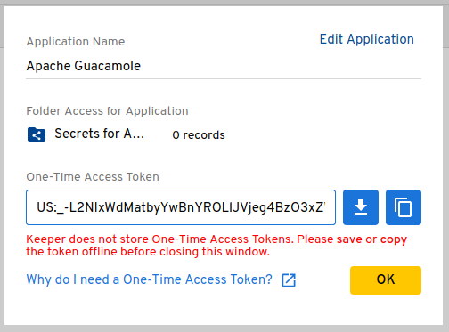

Retrieving secrets from a vault
Guacamole supports reading secrets such as connection-specific passwords from a
key vault, automatically injecting those secrets into connection configurations
using parameter tokens or Guacamole configuration
properties via an additional, vault-specific configuration file analogous to
guacamole.properties. This support is intended with multiple vault providers
in mind and currently supports Keeper Secrets Manager (KSM).
Important
This chapter involves modifying the contents of GUACAMOLE_HOME - the
Guacamole configuration directory. If you are unsure where GUACAMOLE_HOME is
located on your system, please consult Configuring Guacamole before
proceeding.
Downloading the vault extension
The vault extension is available separately from the main guacamole.war. The
link for this and all other officially-supported and compatible extensions for
a particular version of Guacamole are provided on the release notes for that
version. You can find the release notes for current versions of Guacamole here:
http://guacamole.apache.org/releases/.
The vault extension is packaged as a .tar.gz file containing directories
specific to vault implementations (currently only ksm/ for the KSM
implementation). Each vault-specific directory contains a .jar file (the
actual Guacamole extension). The Guacamole extension .jar will ultimately
need to be placed within GUACAMOLE_HOME/extensions.
Installing key vault support
Guacamole extensions are self-contained .jar files which are located within
the GUACAMOLE_HOME/extensions directory. To install the KSM vault extension,
you must:
Create the
GUACAMOLE_HOME/extensionsdirectory, if it does not already exist.Copy
ksm/guacamole-vault-ksm-1.5.1.jarwithinGUACAMOLE_HOME/extensions.Configure Guacamole to use KSM to retrieve secrets, as described below.
Important
You will need to restart Guacamole by restarting your servlet container in order to complete the installation. Doing this will disconnect all active users, so be sure that it is safe to do so prior to attempting installation. If you do not configure the vault support properly, Guacamole will not start up again until the configuration is fixed.
Adding Guacamole to KSM
Allowing an application like Guacamole to access secrets via KSM involves creating an application in KSM. A KSM application is simply a means of assigning permissions, narrowing exactly which secrets the application in question should be able to access.
Log into your vault via the Keeper Security website and create at least one shared folder to house any secrets that should be made available to Apache Guacamole. These folders will be used when registering Apache Guacamole with KSM and functions to define exactly which secrets the application may access. Secrets that are not within these shared folders will not be accessible by Guacamole.
The option for creating a shared folder is within a submenu that appears when you click on “Create New”:

No special options need to be selected for the shared folder except for providing a reasonable name for the folder:

Navigate to KSM by selecting the “Secrets Manager” tab in the navigation sidebar on the left side of the screen:

Click “Create Application” on the right ride of the toolbar near the top of the screen:

The dialog that appears will prompt you to provide a name for the application that will access the vault, as well as the shared folder(s) that this application will have access to. Enter a reasonable name for the application, such as “Apache Guacamole”, and select the shared folder(s) you created for Guacamole to access:

Guacamole only needs read-only access permissions to secrets, which should already be selected by default.
Warning
You should only check the “Lock external WAN IP” box if your Guacamole server has a static IP and you will be using the KSM CLI tool directly on that server. If you will be running the KSM CLI tool on a separate machine with a different public IP address, you must not check this box.
Once satisfied with the application name and parameters, click “Generate Token” to generate a one-time token:

Copy the provided one-time token using the KSM CLI tool to obtain the base64-encoded configuration that must be provided to Guacamole with the
ksm-configproperty. This token can only be used once, but the base64 configuration can be used indefinitely unless manually revoked within KSM:$ ./ksm init default US:_-L2NIxWdMatbyYwBnYROLlJVjeg4BzO3xZWoiDkh4U ewogICJjbGllbnRJZCI6ICJTR1ZzYkc4Z2RHaGxjbVVoSUZSb1pYTmxJSEJ5YjNCbGNuUnBaWE1n YUdGMlpTQmlaV1Z1SUcxaGJuVmhiR3g1SUhKbFpHRmpkR1ZrTGlCWGFIay9Qdz09IiwKICAicHJp dmF0ZUtleSI6ICJWRzhnWlc1emRYSmxJSFJvWVhRZ1lXTjBkV0ZzSUhObGJuTnBkR2wyWlNCMllX eDFaWE1nWVhKbElHNXZkQ0JsZUhCdmMyVmtJSFpwWVNCdmRYSWdiV0Z1ZFdGc0xpQlVhR1Y1SUcx aGVTQnViM1FnUVV4TUlHSmxJSE5sYm5OcGRHbDJaU0IyWVd4MVpYTXNJR0oxZENCaGRDQnNaV0Z6 ZENCdmJtVWdjMlZsYlhNZ2RHOGdZbVV1IiwKICAiYXBwS2V5IjogIlYyVnNZMjl0WlNFZ1JXNXFi M2tnUVhCaFkyaGxJRWQxWVdOaGJXOXNaU0U9IiwKICAiaG9zdG5hbWUiOiAia2VlcGVyc2VjdXJp dHkuY29tIiwKICAic2VydmVyUHVibGljS2V5SWQiOiAiMTAiCn0K $
Configuring Guacamole for KSM
Guacamole requires only a single configuration property to configure secret
retrieval from KSM, ksm-config, which must be provided the base64
configuration value retrieved from KSM using the one-time token obtained when
Guacamole was registered with KSM as an application as described above.
All other configuration properties are optional.
ksm-configThe base64-encoded configuration information generated for the application you created within KSM to represent Apache Guacamole. The easiest way to obtain this value is using the KSM CLI tool. as described above. This value is required.
ksm-allow-unverified-certWhether unverified server certificates should be accepted. If set to
true, the server certificate for connections to the KSM service will be accepted even if they cannot be verified. Unless you are a developer testing changes to the KSM vault support itself, it is unlikely that you need to set this property.
Completing the installation
Guacamole will only reread guacamole.properties and load newly-installed
extensions during startup, so your servlet container will need to be restarted
before the newly-installed vault support will take effect. Restart your servlet
container and give the vault support a try.
Important
You only need to restart your servlet container. You do not need to restart guacd.
guacd is completely independent of the web application and does not deal with
guacamole.properties or the authentication system in any way. Since you are
already restarting the servlet container, restarting guacd as well technically
won’t hurt anything, but doing so is completely pointless.
If Guacamole does not come back online after restarting your servlet container, check the logs. Problems in the configuration of installed vault support extensions may prevent Guacamole from starting up, and any such errors will be recorded in the logs of your servlet container.
Retrieving connection secrets from a vault
Secrets for connection parameters are provided using parameter
tokens that can be either automatically or manually defined.
Automatic tokens are defined dynamically by Guacamole when the connection is
used based on other configuration values within the
connection, such as the connection’s hostname or username. Manual tokens
are injected by Guacamole based on secrets that are statically mapped using an
additional configuration file.
Automatic injection of secrets based on connection parameters
Parameter tokens containing the values of secrets within a record are
automatically injected for connections whose parameter values match specific
criteria, such as having a particular username or hostname. This happens
whenever a connection is used and is fully dynamic, affecting only the state of
the connection from the perspective of the user accessing it.
Important
There are limitations to the degree that secrets can be automatically applied based on connection parameters:
In all cases, only unique records are considered. If multiple records match the criteria that applies to a particular token in the context of a connection, the token will not be injected for that connection.
Automatic injection of secrets cannot currently be used with balancing connection groups, as the underlying connection that the balancing implementation will choose cannot be known before token values must be made available.
If automatic injection of secrets cannot work for your use case, consider using
manually-specified secrets via ksm-token-mapping.yml.
Parameter tokens injected from KSM records take the form
${KEEPER_CRITERIA_SECRET}, where CRITERIA determines how the
applicable record is located based on the connection’s parameters and SECRET
determines what value is retrieved from that record.
The following CRITERIA names are supported:
USERThe record whose “login” field contains a username that matches the value of the
usernameparameter of the connection. If the record has no “login” field, a “text” or “password” custom field will be used if the label of that field contains the word “username” (case-insensitive).SERVERThe record whose “login” field contains a hostname that matches the value of the
hostnameparameter of the connection. If the record has no “login” field, a “text” or “password” custom field will be used if the label of that field contains the word “hostname”, “address”, or “IP address” (case-insensitive, ignoring any spaces between “IP” and “address”).GATEWAYIdentical to
SERVER, except that the value of thegateway-hostnameparameter is used. This is only applicable to RDP connections.GATEWAY_USERIdentical to
USER, except that the value of thegateway-usernameparameter is used. This is only applicable to RDP connections.
The following SECRET types are supported:
USERNAMEThe username specified by the record’s “login” field. If the field is a custom field, the label must contain the word “username” (case-insensitive) and must be a “text” or “hidden” field.
PASSWORDThe password specified by the record’s “password” or “hidden” field. If the field is a custom field, the label must contain the word “password” (case-insensitive).
KEYThe private key associated with the record. If the record has a dedicated key pair field, the private key from this field is used. If not, and the record has a single
.pemfile attached, the content of that attachment is used. Lacking any key pair field or attachment, any custom field that is a “password” or “hidden” field will be used as long as it contains the phrase “private key” in its label (case-insensitive, ignoring any space(s) between “private” and “key”).PASSPHRASEThe passphrase associated with the record’s private key, if the record type has dedicated fields for these. If the record has no dedicated passphrase field, a “password” or “hidden” custom field will be used as long as it has the word “passphrase” in its label (case-insensitive).
For example, the ${KEEPER_USER_PASSWORD} token would retrieve the password
for the user specified by the username parameter, and ${KEEPER_SERVER_KEY}
would retrieve the private key for the server specified by the hostname
parameter.
Manual definition of secrets
Parameter tokens can be manually defined by placing a YAML file within
GUACAMOLE_HOME called ksm-token-mapping.yml. This file must contain a set
of name/value pairs where each name is the name of a token to define and each
value is a reference to a secret in KSM using “Keeper Notation”.
For example, the following ksm-token-mapping.yml defines two parameter
tokens, ${WINDOWS_ADMIN_PASSWORD} and ${LINUX_SERVER_KEY}, each pulling
their values from different parts of different records in KSM:
WINDOWS_ADMIN_PASSWORD: keeper://odei1zeejoL7Ceiv3eig0a/field/password
LINUX_SERVER_KEY: keeper://Chah0VuPh0ohyeuL4che1o/file/idrsa.pem
Token substitution of other parameter tokens like ${GUAC_USERNAME} is
performed on the reference to the secret to allow the reference to vary by
values that may be relevant to the connection. The values of substituted tokens
are URL-encoded before being placed into the reference in “Keeper Notation”. In
addition, the following tokens are available for use within the secret
reference:
${CONNECTION_GROUP_NAME}The human-readable name of the connection group being used. Secrets using this token are only available if a user is directly connecting to a balancing connection group, not manually connecting to a connection within a group.
${CONNECTION_GROUP_ID}The unique identifier of the connection group being used. Secrets using this token are only available if a user is directly connecting to a balancing connection group, not manually connecting to a connection within a group.
${CONNECTION_NAME}The human-readable name of the connection being used. Secrets using this token are only available if a user is directly connecting to a connection, not connecting via a balancing group.
${CONNECTION_ID}The unique identifier of the connection being used. Secrets using this token are only available if a user is directly connecting to a connection, not connecting via a balancing group.
${CONNECTION_HOSTNAME}The value of the
hostnameparameter of the connection being used. Secrets using this token are only available if a user is directly connecting to a connection, not connecting via a balancing group.${CONNECTION_USERNAME}The value of the
usernameparameter of the connection being used. Secrets using this token are only available if a user is directly connecting to a connection, not connecting via a balancing group.${USERNAME}The username of the current user, as stored with the user object representing that user in the system storing the relevant connection or connection group. This is not necessarily the same as
${GUAC_USERNAME}, which is the username provided by the user as part of their credentials when they authenticated.
For example, to automatically define a token called ${LINUX_SERVER_KEY} that
selects a private key from among several within the same record by searching
for a file named after the current user, the following YAML could be used:
LINUX_SERVER_KEY: keeper://Chah0VuPh0ohyeuL4che1o/file/${USERNAME}.pem
Retrieving configuration properties from a vault
Secrets for Guacamole configuration properties are provided through an
additional file within GUACAMOLE_HOME called guacamole.properties.ksm.
This file is identical to guacamole.properties except that the values of properties
are references to KSM secrets in “Keeper Notation”.
Secrets can be used for any Guacamole configuration property that isn’t
required to configure the KSM support.
For example, the following guacamole.properties.ksm defines both the
mysql-username and mysql-password properties using values from a single
record in KSM that contains a username/password pair:
mysql-username: keeper://iel4yeic5ahxae7Eereec7/field/login
mysql-password: keeper://iel4yeic5ahxae7Eereec7/field/password